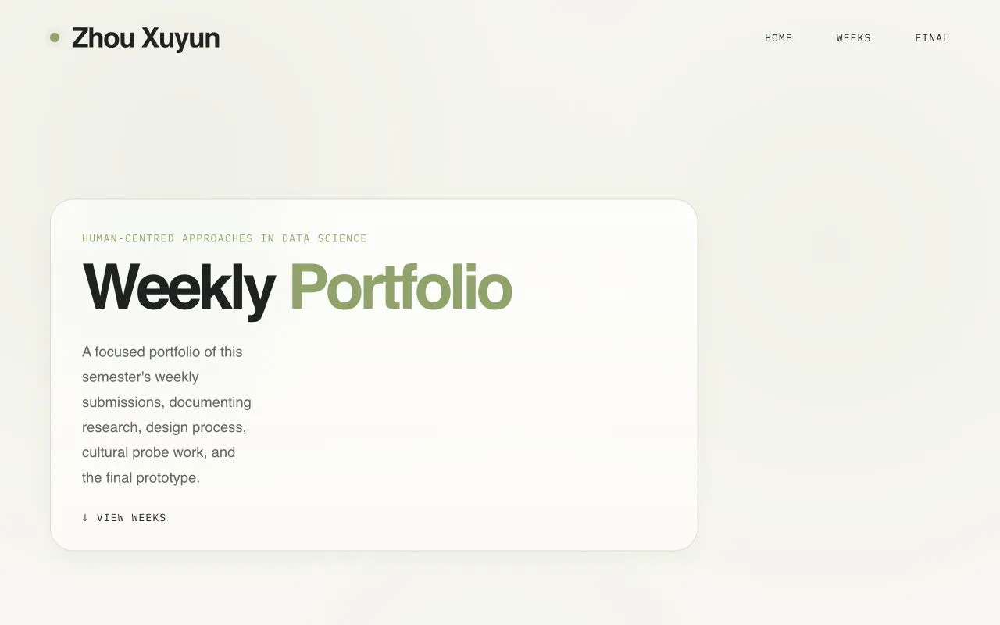
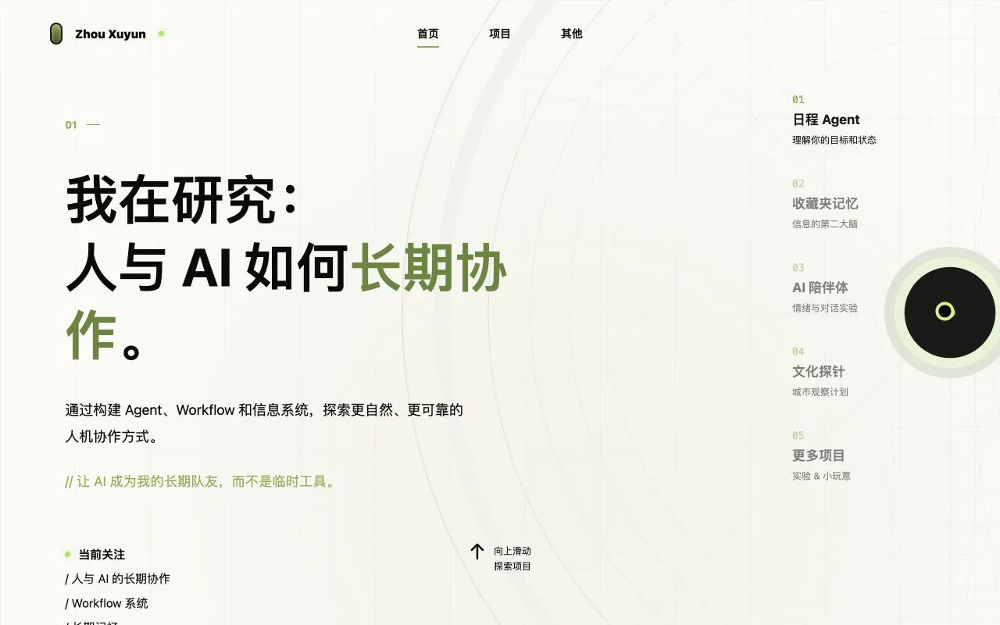
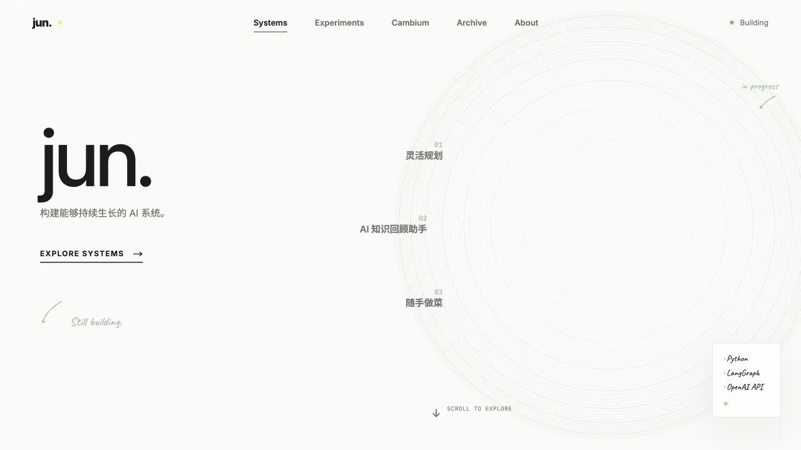
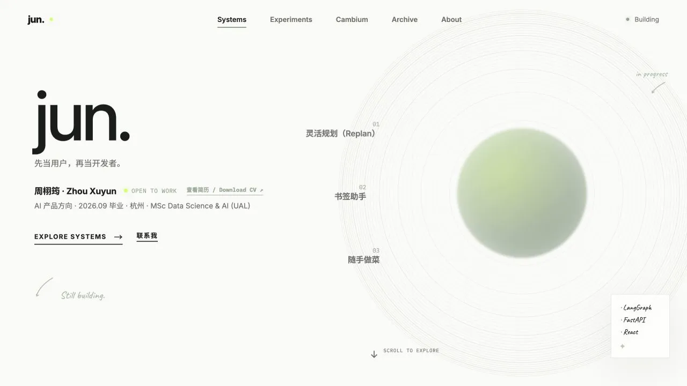
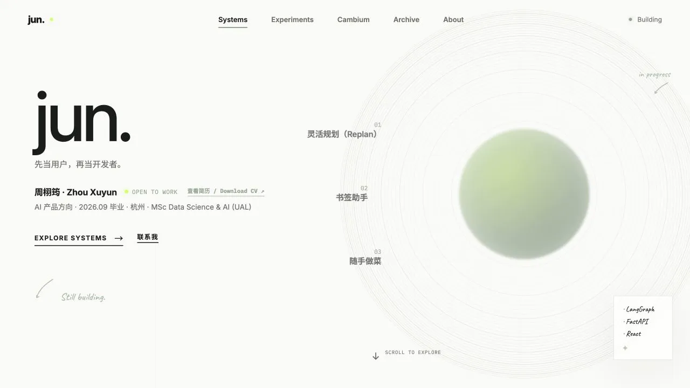
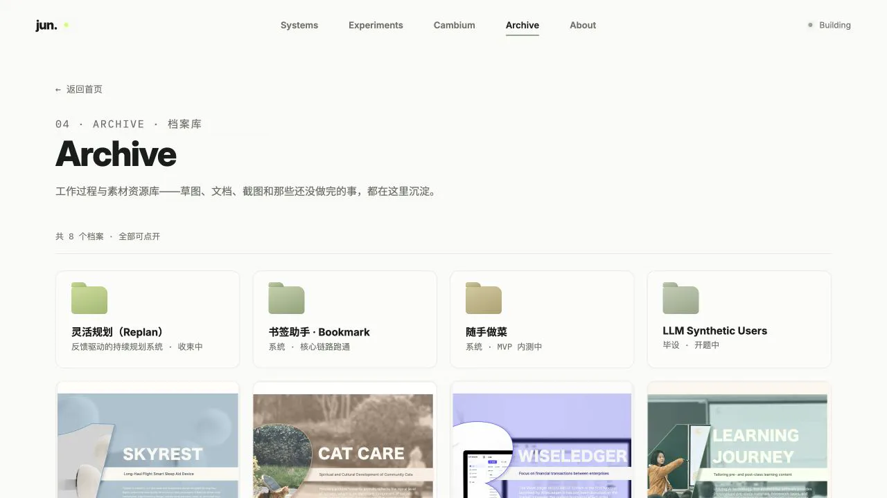

META ARCHIVE · 2026.06 — NOW
这个网站如何长出来
在独立课程作品集的尝试之后，它最初只是一个关于 AI 研究方向的单页，后来逐步变成项目入口、过程档案、实验台和写作系统。这份档案保留旧界面，也记录每次大改背后的判断。
网站不是一次设计完成的展示壳，而是随着项目、身份和使用场景不断校正的信息系统。
2026.06.10 · COURSEWORK PORTFOLIO · PARALLEL REPOSITORY
旁支前史：第一次把过程放到网页里

Human-Centred Approaches in Data Science 的课程网站，按周整理 Body-storming、可用性观察、Figma、文化探针和最终原型。
它第一次验证了“过程本身值得被展示”：每周任务、原始照片和原型证据都可以成为作品的一部分。
它不是个人网站仓库的直接旧版本，而是一条并行前史；其中的文化探针内容后来进入 Experiments 与 Archive。
2026.06.03 · INITIAL PROTOTYPE
从“我在研究什么”开始

先建立一个明确的研究方向：人与 AI 的长期协作，以及 Agent、Workflow 和信息系统。
页面更像研究宣言。概念很完整，但个人身份、真实项目、过程证据和下一步入口都不够清楚。
招聘者和合作对象需要先知道“我做过什么”，而不是先理解一整套抽象主题。
2026.07.11 · PORTFOLIO REBUILD
从主题网站改成项目型作品集

建立 jun. 品牌与 Systems、Experiments、Cambium、Archive、About 五个入口；首页聚焦三个主项目。
主项目负责快速判断，详情页负责完整阅读；实验、文章与历史材料不再和核心作品混在一起。
让访问者先看到能力主线，再按兴趣深入；同时为未完成项目保留诚实的过程空间。
2026.07.14 — 07.25 · CREDIBILITY & RESPONSIVE
让身份、证据和移动端都站得住

删除没有真实记录支持的完美指标和占位内容，统一项目名称、状态、链接与个人身份。
增加简历与联系方式；为平板和手机重排导航、项目浏览和详情内容，降低环形切换的误触。
作品集首先是判断工具。真实边界比漂亮数字更可信，手机端也不能只是桌面版的缩小副本。
2026.07.26 — NOW · LIVING ARCHIVE
从静态作品集变成持续更新的档案


加入项目 Demo、服务设计 PDF 档案、课程实验和正在开发的小工具，让不同成熟度的工作各归其位。
网站迁移到自定义域名与自动部署；Cambium 接入独立内容后台，文章不再写死在页面里。
主项目讲完整判断，Experiments 保留快速尝试，Archive 保存过程，Cambium 记录认知变化。
以后怎么记录
大改前从可运行的 Git 版本截图，不用重新绘制“假旧版”。
不只列功能变化，也记录是哪一个真实问题迫使结构改变。
提交记录说明做了什么，回顾文字解释当时为什么这样判断。
只有影响结构、内容策略或核心交互的变化才进入主时间线。